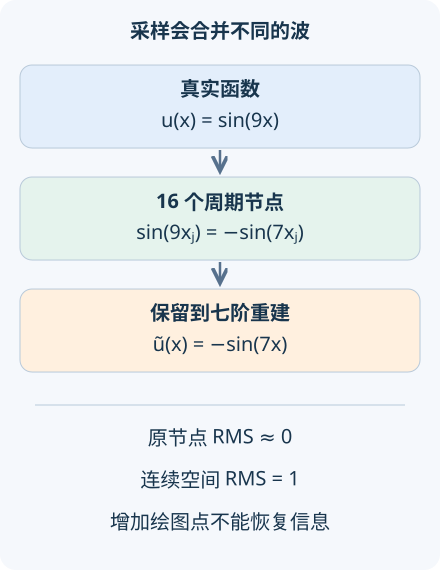

本讲目录
AI 研究 02 · 傅里叶神经算子：低频计算为何也会犯高频错误
问题：训练网格上的误差已经接近零，换一个更密的网格为什么会暴露整条错波？先修：算子学习、复数与傅里叶级数。资料核查截至 2026-09-08；本讲把 FNO 的结构与一个固定谱投影实验分开。
1. 把远距离相互作用搬到频率空间
上一讲的热方程中，每个傅里叶模式只需乘一个衰减因子。这让人想到：对更复杂的物理映射，能否直接学习各模式之间的通道变换？傅里叶神经算子使用这类结构，将全局空间操作变成有限个谱系数上的计算。它能表达非局部关系，但不会自动消除采样带来的信息损失。
设中间特征为 \(v_\ell(x)\in\mathbb R^c\)，一个典型层可写成
\(W_\ell\) 是每个位置共用的通道线性映射，\(R_\ell(k)\) 是频率相关的复矩阵，只在选定模式上参数化；\(\sigma\) 是点态非线性。输入提升到通道空间，若干层之后再投影成物理输出。这里“傅里叶”指计算结构，不等于把整个偏微分方程解析求解了。FNO，首稿 2020-10-18给出了原始架构与若干 PDE 实验。

2. 从离散傅里叶定义推出混叠
取 \(N\) 个点 \(x_j=2\pi j/N\)，\(j=0,\ldots,N-1\)。本讲的 DFT 归一化为
在这些节点上，\(e^{i(k+N)x_j}=e^{ikx_j}e^{2\pi ij}=e^{ikx_j}\)。因此相差整数倍 \(N\) 的频率产生完全相同的数组。这叫混叠，不是优化器没有训练好，而是观察本身不唯一。
现在令 \(N=16,k=9\)。因为 \(9\equiv-7\pmod{16}\)，
如果谱层只保留 \(|m|\le7\)，并把保留权重设为 1，就会重建 \(-\sin7x\)。它在全部训练节点上的误差为零，但真实函数是 \(\sin9x\)。利用正交性，归一化连续误差满足
所以 RMS 等于 1。这个完整反例说明，插值到更密的输出网格只是更清晰地画出错误，并没有恢复缺失的信息。
3. 截断、混叠与非线性是三件相连的事
截断表示主动不保留某些模式。例如 \(N=32,k=9,K=7\)，九阶波已经可以被采样分辨，却在投影中被删掉，重建近于零，RMS 是 \(1/\sqrt2\)。混叠则发生在采样时：尚未决定保留多少模式，高频就已经与别的频率无法区分。两种失败的曲线与数值不同。
非线性还会在层内生成新频率。即使输入只有 \(\sin kx\)，平方也产生
若网格无法分辨 \(2k\)，新模式就会折回。实际 FNO 使用的激活不一定是平方，但频率扩展的风险依然存在。增加保留模式数不能超过网格的信息上限；抗混叠需要合适的过采样、滤波或离散化设计，并检查它们与非线性的先后次序。
本实验为简洁而略去偶数网格的 Nyquist 模式 \(m=N/2\)，实际截断为 \(\min(K,N/2-1)\)。该频率的正弦在全部节点为零，余弦则交替正负，二者不能照搬普通正负频率对的处理。实验用显式 DFT，便于看清约定；工程实现通常用 FFT 提速。
4. 怎样认真验证跨分辨率能力
同一组频率权重可以在不同网格执行，首先说明参数数量未绑定于像素数。它是否逼近同一个连续算子，还取决于输入正则性、谱归一化、已解析的频带、数值积分和训练分布。上一讲的 \(I_NG_NP_N\) 比较仍然需要做。神经算子理论，首稿 2021-08-19提供了函数空间视角，而不是任何离散模型都无条件可迁移的承诺。
边界同样关键。周期傅里叶展开默认两端相接；非周期函数在拼接处可能出现跳跃，带来振荡和大量高频。填充、坐标变换或不同基函数都能改变实现，但必须说明物理边界如何进入模型。把一个固定温度边界问题直接当周期问题，增加层数也无法让任务定义变正确。
近期的函数空间架构研究，首稿 2025-06-12把有限网络扩展的原则放到前台。这条研究线的价值，是让“同一模型作用于不同表示”有明确数学含义。对应用报告，应同时索要同网格误差、跨网格误差、输入频带与边界测试；单个细网格展示不足以识别误差来源。
5. 先预测，再增加采样点
一个实用的诊断顺序是：先用常数输入检查零频与归一化，再用单一可解析模式检查幅度和相位，最后输入两个模式并加入非线性。若常数经过恒等谱层后翻倍，问题很可能在正反变换约定；若仅高频失败，才继续区分截断和混叠。误差表最好同时记录空间范数与频谱误差，因为很小但物理重要的高频可能被总能量指标掩盖。对于湍流等多尺度过程，还需要检查能谱、守恒量和统计分布，不能把本例的平滑扩散直觉直接推广到所有动力学。
默认 \(N=16,k=9,K=7\)：有符号折回波数为 −7，采样 RMS 在浮点精度内为零，512 点密网格 RMS 为 1。本例频率均低于密网格的混叠阈值，其均匀求和能验证相应三角多项式的积分。先把 \(N\) 改成 32，再把 \(K\) 从 7 调到 9：第一步消除混叠，第二步才解除截断。
对实际训练还应留出整个输入函数作为测试单位，避免把同一函数的相邻节点拆到两边。否则所谓泛化可能只是在原有曲线上补点。
6. 迁移练习
题一：只在训练节点上检查 \(N=16\) 的九阶正弦，换十次随机初始化能发现上述错误吗？
展开答案
不能靠这些节点区分两种函数。随机初始化可能改变拟合方式，却不创造新观察。需要离开原网格的验证点，或者独立高分辨率真值，并明确允许输入的频带。
题二：输入波数不超过 6，做一次平方后，在 \(N=16\) 上是否仍然充分解析？
展开答案
未必。平方可能产生 12 阶模式，而 12 在 16 点上折回 −4；实信号的正负频率还会配对。可先在更密网格计算非线性，再适当低通，最后下采样；所需频带应由操作产生的最高频率确定。
速查摘要
| 问题 | 判别 |
|---|---|
| 混叠 | \(k\) 与 \(k+N\) 在 \(N\) 点上不可区分 |
| 截断 | 已分辨的模式也可能被 \(\lvert k\rvert>K\) 删除 |
| 非线性 | 会生成额外频率，需重新检查解析能力 |
来源：FNO、神经算子、2025 函数空间扩展。先修：算子学习；下一讲：等变网络。